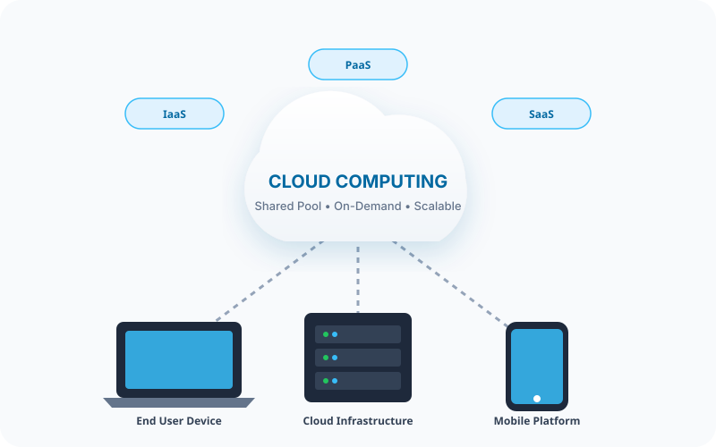

My First Cloud Website
Lab 01: Deploy Your First Static Website to the Cloud - Cloud Computing Fundamentals

About Me
- Full Name: Lý Trần Gia Khang
- Student ID: 24110098
- Course Name: Cloud computing (2+1)
- Lecturer: Trương Thị Ngọc Phương (HCMUTE)
- Assignment: Lab 01 - Deploy Static Website with Public HTTPS
What is Cloud Computing?
According to the NIST (National Institute of Standards and Technology) definition presented in Week 1 lecture, Cloud Computing is a model for enabling ubiquitous, convenient, on-demand network access to a shared pool of configurable computing resources (such as networks, servers, storage, applications, and services) that can be rapidly provisioned and released with minimal management effort or service provider interaction.
Unlike traditional on-premises IT infrastructure - where organizations must forecast capacity years ahead, invest significant capital expenditure (CapEx) into physical hardware, and maintain local data centers - cloud computing fundamentally shifts the paradigm to an operational expenditure (OpEx) model. Businesses pay only for what they consume (Pay-as-you-go) while gaining instantaneous global scalability, fault tolerance, and high availability powered by modern distributed systems.
Cloud Service Models
Cloud capabilities are delivered through three primary service models, differing by level of abstraction, control, and management responsibility:
Infrastructure as a Service
Provides virtualized computing infrastructure on demand, including virtual machines, raw block/object storage, and software-defined networking. The cloud provider maintains physical hardware and facilities, while the customer manages operating systems, runtimes, middleware, and applications.
Platform as a Service
Delivers a fully managed environment for building, running, and scaling application code. Developers focus solely on code and data without having to provision, patch, or configure the underlying operating systems and web server infrastructure.
Software as a Service
Delivers complete, turnkey applications accessible over the network (usually via a web browser or mobile client). The cloud provider is entirely responsible for maintenance, infrastructure, data replication, and security patching.
Deployment Information
- Hosting Platform: GitHub Pages
- Public URL: https://davidl-132.github.io/cloud-lab1/
- Source Repository: https://github.com/davidl-132/cloud-lab1
- Security Protocol: HTTPS (SSL/TLS Encrypted connection)